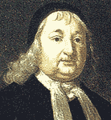

|
Samuel Sewall
|

|
Description: Digital image from an oil painting by Smibert, Museum of Fine Arts, Boston. |
| Caption: "Dawn of Tolerance in
Massachusetts. Public Repentance of Judge Samuel Sewall for his
Action in the witchcraft trials." Description: In this mural size painting Samuel Sewall is shown standing in his pew, head bowed, in the South-Meeting House of Boston while the Rev. Samuel Willard, reads aloud Sewall's statement of repentance for his role as a judge during the witch trials of 1692. The mural is one of five paintings that depict important events in the early history of Massachusetts, under the theme "Milestones on the Road to Freedom in Massachusetts." The five paintings hang in the House of Representatives, State House, Boston. Artist, Albert Herter, 1942. Source: Pamphlet, "Milestones on the Road to Freedom in Massachusetts: Ceremonies at the Presentation," January 18, 1943.p. 10. |
|
| Description: Five murals in the House of
Representatives, State House, Boston, illustrating the theme
"Milestones on the Road to Freedom in Massachusetts." Source: Pamphlet, "Milestones on the Road to Freedom in Massachusetts: Ceremonies at the Presentation," January 18, 1943. |
{kind=link}
{kind=link}